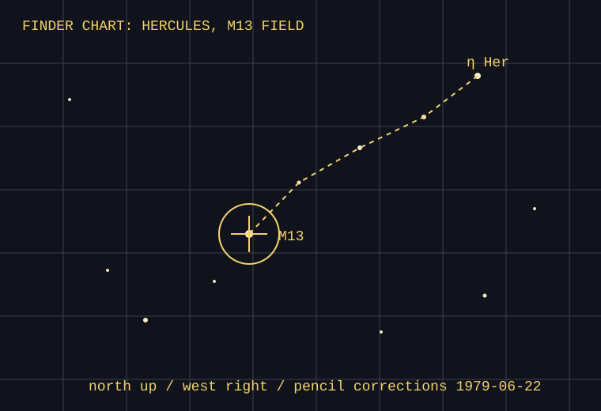

The bright-star hop was penciled from eta Herculis toward a soft unresolved patch. The observer wrote “not a cotton ball — granulated at 96× when air steadies.”
Useful field note: the finder was reversed left-right, but this chart is drawn for the main eyepiece. A second red pencil arrow says WEST IN FINDER IS A LIE TONIGHT.
| Date | Object | Eyepiece | Seeing |
|---|---|---|---|
| 1979-06-22 | M13 | 12mm Kellner | II-III, damp |
| 1979-07-03 | M92 check | 26mm Plossl | thin haze |